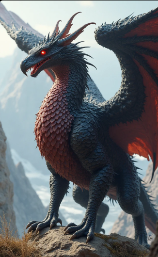
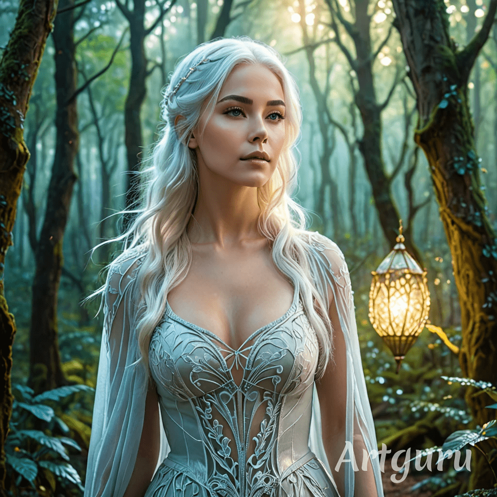

Luna era uma jovem curiosa que vivia em uma vila cercada por florestas encantadas. Desde pequena, sonhava em explorar o mundo além das colinas azuis que via da sua janela.

A jovem sempre quis explorar o mundo, entretanto seus pais não permetiam que a jovem saisse pois la fora havia inumeros perigos os quais não queriam que a jovem enfrentassem.
Em um dia chuvoso enquanto todos na vila dormiam, uma criatura se aproximava, a mesma era um híbrido de dragão e griffo, além de alta sua pele era uma mistura de pelos e escamas e sua cor era uma mistura de vermelho e laranja e seus olhos negros como a noite
Por onde passava deixava destruição, com a chegada do ser todos acordavam desesperados tentando salvar suas familias, e com a familia de Luna não seria diferente. Seu pai a pegava pelo braço na intensão de salva-la
Com um pesar no coração e com os olhos banhados em lágrimas seus pais lamentavem tirando a menina da vila, e infelizmente não teriam tido a mesma sorte deixando a menina sozinha na mata.
Após andar a noite todo desamparada, a jovem teria parado para descansar em uma caverna, um tempo depois a jovem sai de lá e continua sua caaminhada, ao longe havia uma montanha onde sempre ia com seu pai e lá seria um bom lugar para se reerguer
Após dias caminhando se alimentando de frutas a jovem se depara com a enorme montanha ao subir até o topo se depara com uma vila, a qual havia inumeras pessoas com os cabelos igauis aos dela,
pois em sua antiga vila todos tinham os cabelos castanhos e pretos incluindo seus pais, ela era unica com os cabelos brancos o que sempre lhe causou duvidas, logo uma anciã vai até a jovem e lhe oferece alimentos

Luna então teria descoberta que teria nascido naquela vila, porém seu lar também havia sido destruido e para salvar a todos seus pais biologicos teriam feito aquela montanha para manter todos a salvo,
Porem no meio do caminho para trazer todos até lá, os mesmos teriam falecido ao serem atacados de surpresa por caçadores, pois seus pais eram um tipo de criaturas magicas, seres divinos assim como ela,
e a menina teria sido salva pelo casal que a criou durante todos esses anos.
Luna então teria descoberto quem realmente era e qual era seus propósito na terra.